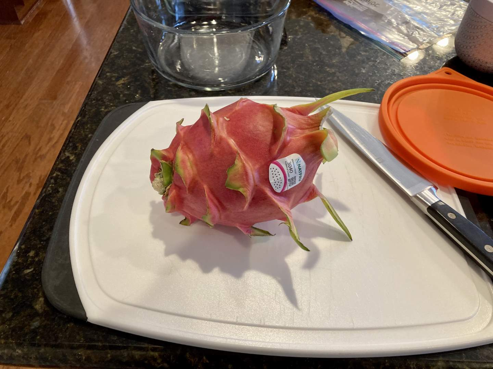

Pie 27: Dragon Fruit
2023-12-30Filling recipe is from Cooking with Carlee.
Crust recipe from Tastes Better From Scatch.
Taste:
Difficulty:
Vibes:
Suggested pairings: after-dinner tea
While in the Atlanta area visiting some family of Katie Beth, we stopped at the Dekalb country farmers market, which is really an international market. Faced with a vast array of exotic fruits and vegetables, we decided to pick something and make a pie out of it. Key limes were considered, but we settled on dragon fruit, a spiky cactus fruit native to the Pacific coast of Mesoamerica. This particular specimen was grown in Ecuador.
At her parents’ house, I sliced open the fruit and was shocked to find pale interior flesh liberally sprinkled with tiny black seeds. I had never before eaten dragon fruit and--call me naive--I expected the flesh to be pink like the exterior. I googled this later and found that some varieties are indeed pink inside and those are the ones used to make pink juices and cocktails.
Once the kiwi-tasting flesh was scooped and pureed with an immersion blender, I added sugar and a cornstarch slurry, then set it to simmer.
Using a stand mixer, I beat 12 oz of cream cheese smooth and added an egg, some vanilla, lime juice, and the thickened dragon fruit slurry. Katie Beth combined it all together and poured it into a standard pie crust I had prepared and blind-baked.
After baking for about an hour, the pie looked quite like a quiche. Not a good look in my opinion (I’m bearish on those eggy tarts). However, after cooling for several hours, we tasted it and were pleased to find it scrumptious, creamy, and not at all quichelike.
We took some slices to share with friends on our drive home and they also thought it was excellent! Katie Beth would call it a crowd-pleaser, as all who tried it liked it. We heartily recommend this recipe.